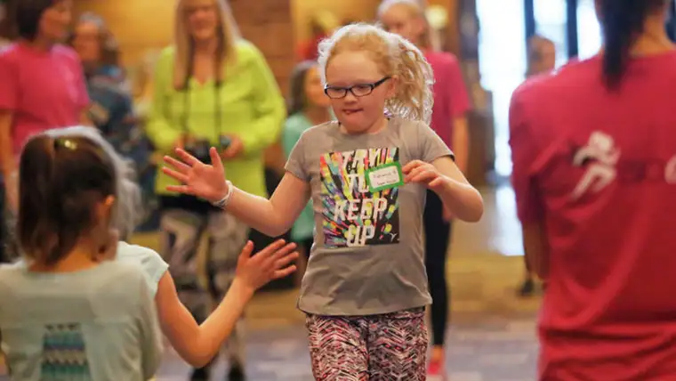

David Samson / The Forum
KINDRED — When her daughter Carly started BIO Girls several years ago, Lori Pearson couldn’t foresee how transforming it would be.
But in one of the weekly sessions, Carly learned about a back-and-forth journaling process — in this case between mother and daughter — that turned a difficult time around.
“She would journal, then place it under my pillow, then I’d journal back and do the same,” Pearson says, noting that her daughter was “feeling high emotion” and didn’t know how to process it clearly. “It gave her some time and space to think about what she wanted to say … and that led to some face-to-face verbal conversations later.”
For that reason and more, Pearson “can’t say enough good things” about BIO Girls — which stands for “Beautiful Inside and Out.”
The program, designed for girls in grades 2 to 6, aims to “build self-confidence and life skills through positive mentoring, physical fitness and Christian-based curriculum.”
Founder and Executive Director Missy Heilman, West Fargo, says the idea came to her about seven years ago while raising her young daughters.
“I was just seeing how much pressure there is on girls in society to be something other than who they truly are,” she says. “It was that, combined with my passion for running.”
Studies show that self-esteem runs lowest in girls in sixth grade, Heilman notes. “We’re trying to reach them before that low, to help build them up and combat those pressures and anxieties.”
Gatherings typically begin in the late winter, with the end goal of participating together in a major fitness event in the spring, such as the Fargo Marathon 5K.
Currently, six meeting sites exist in the Fargo-Moorhead area, along with several in western Minnesota, and throughout North Dakota, with possible expansion soon into Montana, Iowa and South Dakota.
The 90-minute gatherings focus on five key areas: self-image and empowerment; servant leadership; whole-self-awareness; healthy relationships; and kindness and compassion.
“We have a large group lesson with the theme, then break into smaller groups for discussions with mentors, then an activity related to the theme,” Heilman explains. “It’s really about relationships and reflection, and just building each other up. We definitely don’t have enough of that these days.”
Because meetings take place after a long school day, she says, BIO Girls employs “fun and engaging” activities, and parents often comment on how it’s the one extracurricular that doesn’t require a push — the girls are eager to go.
Aiden Lundblad, 13, participated at the Olivet Lutheran site for two years, and is now serving as a junior mentor. “With other activities, sometimes I feel pressure, like I need to always do my best,” she says. “At BIO Girls, I can be having a bad run, but they’ll still accept me and encourage me.”
The end goal is participating together in a major fitness event in the spring, such as the Fargo Marathon 5K. David Samson
The end goal is participating together in a major fitness event in the spring, such as the Fargo Marathon 5K. David Samson
Nicole Spelhaug, mother to BIO Girls Ava and Sydney, says she appreciates how the mentors support her mothering.
“You tell (your kids) they are talented and beautiful, but I think they start to believe it when they hear it from other people, too,” she says. “And then to live the lessons and pay it forward with your own friends and at school … it’s a wonderful gift.”
Sara Ohman, site director at Hope Lutheran Church, discovered BIO Girls after moving to the area from Wisconsin, and, as a former college basketball player with a competitive nature, she appreciates how the girls can “just enjoy physical activity without that competitiveness.”
Heilman also enjoys how BIO Girls brings girls together “from different schools and demographics — kids who probably wouldn’t be friends otherwise” to “love and support each other.”
“We’re often perceived as a running club,” she says, “We use that as a tool to build confidence, but we’re not here to build superstar runners. We’re here to let these girls know they’re good enough.”
The faith component provides the base. “Our mission is to help these girls know they are beautiful inside and out, that God made them perfect in his eyes, and they shouldn’t feel they have to change at all,” she says.
Though most BIO Girls groups have already started up for this year, she says, an additional site in West Fargo will begin the first weekend in June. To learn more, visit www.biogirlsrun.com.
[For the sake of having a repository for my newspaper columns and articles, I reprint them here, with permission, a week after their run date. The preceding ran in The Forum newspaper on March 10, 2018.]